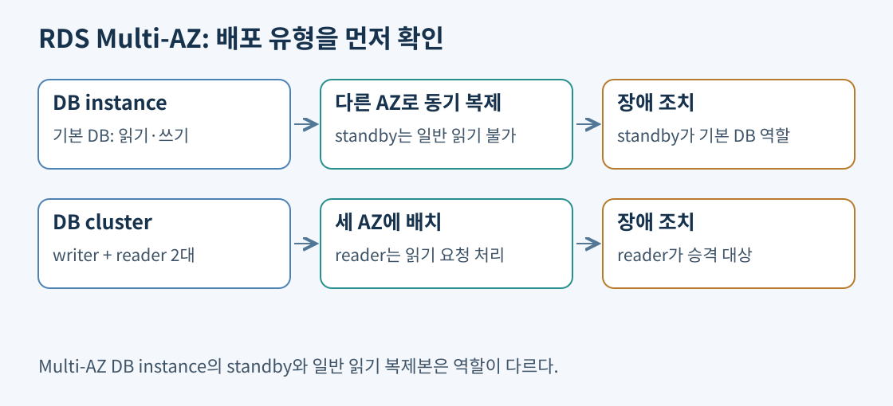
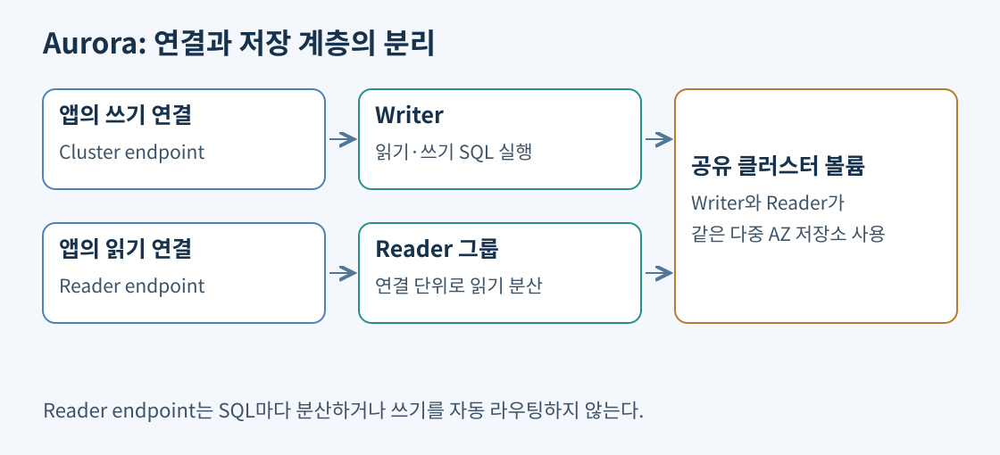
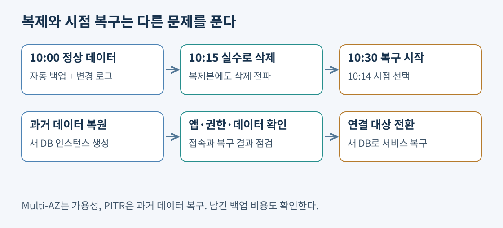

쇼핑몰은 고객, 주문, 주문 상품, 결제를 서로 연결한다. 주문을 저장하면서 재고를 줄이고 결제 상태를 바꾸는 작업은 일부만 성공하면 곤란하다. 관계형 데이터베이스는 테이블 사이의 관계, 제약 조건, 트랜잭션을 이용해 이런 데이터를 다룬다. 트랜잭션은 여러 변경을 하나의 작업 단위로 묶는다. SQL로 조인하거나 여러 조건을 조합하는 조회가 많다면 RDS의 MySQL·PostgreSQL 같은 엔진부터 검토할 수 있다.
RDS는 DB를 대신 설계해 주는 서비스가 아니다. AWS가 서버와 운영체제, DB 소프트웨어 운영의 상당 부분을 관리하므로 고객이 EC2에 DB를 직접 설치할 때보다 반복 작업이 줄어든다. 고객은 어떤 엔진을 쓸지, 얼마나 큰 사양이 필요한지, 데이터와 계정에 누가 접근할지 결정한다.
| 영역 | AWS가 맡는 작업 | 고객이 정할 작업 |
|---|---|---|
| 인프라 | 물리 장비와 기반 운영체제 관리 | 리전·서브넷·배치 방식 |
| DB 운영 | 지원되는 패치·백업·복구 기능 제공 | 유지 관리 시간, 보존 기간, 복구 검증 |
| 데이터 | 저장 인프라 제공 | 스키마·인덱스·SQL·데이터 품질 |
| 접근 통제 | 인증·암호화 기능 제공 | 보안 그룹·DB 사용자·권한·암호화 설정 |
예를 들어 검색이 느린 원인이 주문 테이블의 적절한 인덱스 부재라면, 관리형 서비스라는 이유만으로 해결되지 않는다. DB 포트를 인터넷 전체에 공개하거나 앱 계정에 관리자 권한을 주는 것도 고객의 설정 문제다. 보통 앱과 DB를 비공개 네트워크에 두고, DB 보안 그룹은 앱 보안 그룹에서 오는 필요한 포트만 허용한다.
출처: RDS 개요와 책임 비교, RDS 보안
두 엔진 모두 관계형 DB이며 RDS에서 관리할 수 있다. 기존 앱이 MySQL 문법·드라이버·도구를 전제로 한다면 MySQL 호환성이 중요하다. PostgreSQL 확장이나 특정 자료형을 사용하는 앱이라면 해당 기능과 RDS 지원 여부를 확인한다. “PostgreSQL이 더 고급이므로 항상 정답”처럼 엔진 이름으로 판단하지 않는다. 기존 데이터베이스와의 호환성, 필요한 버전·확장, 마이그레이션 작업량이 선택 조건이다.
RDS에서 운영체제에 직접 접속해 임의 프로그램을 설치하는 방식은 일반적인 EC2 DB 운영과 다르다. 특별한 OS 접근 요구나 지원되지 않는 확장이 있다면 관리형 서비스의 제약부터 확인한다. 반대로 단순히 SQL을 쓴다는 이유로 EC2 설치를 선택하면 패치·백업·장애 대응 부담을 고객이 다시 떠안는다.
출처: RDS for MySQL, RDS for PostgreSQL
AZ는 리전 안에서 분리된 장애 영역이다. DB 한 대가 있는 AZ에 문제가 생겼을 때 다른 AZ의 DB로 서비스를 이어 가려는 구성이 Multi-AZ다. 다만 Multi-AZ DB instance와 Multi-AZ DB cluster는 구조가 다르다.

| 배포 방식 | 정상 상태의 역할 | 장애 시 역할 |
|---|---|---|
| Multi-AZ DB instance | 기본 DB가 읽기·쓰기, 다른 AZ standby는 일반 읽기 제공 안 함 | RDS가 standby로 자동 장애 조치 |
| Multi-AZ DB cluster | 세 AZ에 writer 하나와 읽기 가능한 reader 둘 | reader가 장애 조치 대상도 담당 |
DB instance 방식에서는 기본 DB의 변경을 다른 AZ의 대기 DB로 동기 복제한다. 이 대기 DB는 읽기 처리량을 늘리려고 앱이 연결하는 대상이 아니다. 읽기 요청이 많다는 요구에 이 구성만 추가해도 조회 서버가 늘어나지는 않는다.
Multi-AZ DB cluster는 지원되는 MySQL·PostgreSQL 구성에서 사용하는 별도 방식이다. writer와 두 reader를 세 AZ에 두며 반동기 복제 구조를 사용한다. “Multi-AZ standby는 무조건 읽을 수 없다”라는 문장은 DB instance 방식에만 적용해야 한다. 문항이나 설계 문서에서 배포 유형을 먼저 확인한다.
출처: Multi-AZ DB instance, Multi-AZ DB cluster
장애 조치는 실행 중인 모든 SQL을 그대로 이어 주는 마법이 아니다. 연결이 끊기거나 진행 중 트랜잭션이 실패할 수 있다. 앱은 엔드포인트를 사용하고 연결 재시도와 적절한 DNS 처리를 구현해야 한다. IP 주소를 하드코딩하면 DB가 바뀌어도 과거 서버로 접속할 수 있다.
결제 요청은 무작정 재실행해서도 안 된다. 서버가 응답하기 전에 연결이 끊겼지만 실제 결제 기록은 저장됐을 수 있기 때문이다. 요청 식별자로 중복 처리를 막는 방식처럼, 데이터베이스 복구와 앱의 재시도 안전성을 함께 설계한다. Multi-AZ는 AZ 장애 대응이며 다른 리전 전체로 복구하는 구성과는 범위가 다르다.
출처: RDS 장애 조치 과정
월말 통계 SQL이 주문 DB의 CPU를 차지한다고 하자. 통계 조회를 읽기 복제본으로 보내면 기본 DB는 주문 기록에 더 집중할 수 있다. RDS MySQL·PostgreSQL 읽기 복제본은 원본의 변경을 비동기로 전달받는다. 원본에 저장이 끝났어도 복제본에는 아직 반영되지 않을 수 있다. 이 시간 차이가 복제 지연이다.
따라서 주문 저장 직후 “내 주문”을 복제본에서 읽으면 잠시 주문이 없는 것처럼 보일 수 있다. 최신값을 바로 확인해야 하는 흐름은 기본 DB를 읽고, 약간 늦어도 되는 통계·상품 조회를 복제본으로 보내는 방식이 가능하다. 앱이 쿼리 종류와 일관성 요구를 알고 연결 대상을 나눠야 한다.
| 요구 | 주로 검토할 기능 | 주의할 점 |
|---|---|---|
| AZ 장애 후 자동 복구 | Multi-AZ | 연결 재시도와 장애 시간이 남음 |
| 읽기 부하 분리 | 읽기 복제본 | 비동기 복제 지연 |
| 복제본을 독립 DB로 전환 | 승격(Promotion) | 일반 읽기 복제본의 승격은 자동 HA와 다름 |
| 실수로 삭제한 과거 데이터 복구 | 백업·PITR | 복제본에도 삭제가 전파됨 |
일반 읽기 복제본을 승격하면 쓰기 가능한 독립 DB가 된다. 원본과의 기존 복제 관계를 유지하면서 쓰기 서버만 하나 더 생기는 것으로 생각하면 안 된다. 비동기 복제이므로 원본 장애 시 미전달 데이터도 따져야 한다. 일부 엔진·배포 옵션의 기능 차이를 무시하고 모든 replica를 자동 장애 조치 대상으로 취급하지 않는다.
출처: RDS 읽기 복제본, 읽기 복제본 승격
Aurora는 MySQL 또는 PostgreSQL과 호환되는 AWS의 관계형 DB 엔진이다. 인스턴스가 SQL을 실행하고, 데이터는 여러 AZ에 걸친 클러스터 볼륨이 관리한다. writer와 Aurora reader는 같은 클러스터 스토리지를 이용한다. 단순히 일반 RDS DB를 이름만 바꾼 것으로 보면 복제 구조를 혼동한다.

스토리지가 다중 AZ라는 사실과 reader 컴퓨팅이 준비됐다는 사실은 별개다. writer 한 대뿐인 구성에도 저장 계층의 보호는 있지만, 장애 후 승격할 reader를 다른 AZ에 두면 컴퓨팅 장애 대응에도 도움이 된다. reader는 읽기 분산과 writer 장애 조치 후보 역할을 함께 할 수 있다.
출처: Aurora DB 클러스터 구조, Aurora 고가용성
| 엔드포인트 | 사용하는 경우 | 오해하기 쉬운 조건 |
|---|---|---|
| Cluster / writer | 쓰기와 최신 데이터가 필요한 작업 | 장애 조치 뒤 현재 writer로 연결 |
| Reader | 읽기 전용 연결 분산 | SQL 한 문장마다 균등 분산하지 않음 |
| Instance | 특정 인스턴스에 직접 연결 | 해당 인스턴스 역할 변화 고려 |
| Custom | 선택한 인스턴스 그룹 연결 | 별도 분석용 reader 그룹 등 |
Reader endpoint는 연결 단위로 대상을 정한다. 앱이 연결 하나를 오래 유지하면서 수천 번 조회하면 그 연결의 쿼리가 여러 reader를 순회하는 것이 아니다. 읽기 복제본이 없는 클러스터에서는 reader endpoint가 writer에 연결될 수 있다. 또한 reader endpoint는 SQL을 분석해 쓰기를 writer로 전달하는 라우터가 아니므로 앱이 읽기 전용 용도로 사용해야 한다.
출처: Aurora 엔드포인트, Reader endpoint
서울의 주문 서비스와 유럽의 조회 서비스를 운영한다면, 서울 리전의 기본 클러스터와 다른 리전의 보조 클러스터를 Global Database로 연결할 수 있다. 기본 리전에서 변경한 데이터를 저장 계층을 통해 보조 리전으로 복제한다. 가까운 리전에서 읽게 하거나 리전 장애 복구에 활용한다.
리전 간 복제에도 지연은 있다. 계획된 전환과 예상치 못한 리전 장애의 복구는 조건이 다르다. 장애 당시 아직 보조 리전으로 전달되지 않은 변경이 있다면 데이터 손실 가능성을 검토해야 한다. 리전 간 구성을 갖췄다는 사실만으로 RPO가 항상 0이라고 결론 내리지 않는다. RPO는 허용 가능한 데이터 손실 범위, RTO는 복구에 허용하는 시간이다.
보조 리전으로 DB를 전환해도 앱 서버, 비밀값, 네트워크, DNS가 준비되지 않았다면 전체 서비스는 복구되지 않는다. Global Database는 DB 복제 기능이며 서비스 전체 재해 복구 계획의 한 부분이다. 쓰기 전달 기능도 보조 클러스터가 독립적으로 아무 충돌 없이 쓰는 다중 writer 구조와는 구별한다.
출처: Aurora Global Database, 리전 간 전환·장애 조치
Aurora Serverless v2는 인스턴스의 컴퓨팅 용량을 설정한 최소·최대 범위에서 자동 조절한다. ACU는 용량 단위다. 하루 중 조회량이 크게 변하거나 새 서비스의 적정 사양을 예측하기 어려울 때 검토한다. 고정 사양을 고르는 부담은 줄지만 최대 용량, 연결 수, SQL 효율과 비용은 여전히 관리해야 한다.
“Serverless라서 요청이 없으면 무조건 0원”은 틀리다. 0 ACU와 자동 일시 중지는 지원 엔진 버전·구성에서만 가능하며 최소 용량 설정과 일시 중지 조건을 충족해야 한다. 열린 연결이나 일부 기능 조합은 일시 중지를 막을 수 있다. 재개 시 지연도 생길 수 있다. 컴퓨팅이 멈춰도 저장소·백업 등 별도 비용은 남는다.
출처: Serverless v2 동작, 0 ACU 자동 일시 중지 조건
짧게 실행되는 Lambda 수천 개가 각자 DB 연결을 만들면, SQL 부하보다 연결 생성 비용과 연결 수 한도가 먼저 문제가 될 수 있다. RDS Proxy는 앱과 DB 사이에서 연결 풀을 유지하고 재사용한다. DB 장애 시 새 대상과 연결하도록 도와 앱의 복구 부담도 줄인다.
Proxy가 SQL 결과를 캐시하거나 비효율적인 조인을 고쳐 주지는 않는다. 읽기·쓰기 쿼리를 자동 분석해 적절한 서버로 나누는 기능으로 외우지도 않는다. 지원되는 읽기 전용 proxy endpoint와 앱의 연결 선택은 별도 설정이다. 긴 트랜잭션이나 세션 상태 때문에 연결이 고정되면 풀 공유 효과도 줄어든다.
출처: RDS Proxy, Proxy 연결 관리
주문 트랜잭션은 주문 생성과 재고 차감을 모두 반영하거나 모두 취소하는 단위다. SQL 엔진을 고를 때 기존 드라이버·자료형·저장 프로시저 호환성을 확인한다. 최신 주문 확인은 writer, 지연 허용 보고서는 읽기 복제본, AZ 자동 복구는 Multi-AZ처럼 업무 조건을 각각 연결한다. 읽기 복제본이 실행 중이어도 복제 오류나 지연으로 최신값이 아닐 수 있어 ReplicaLag와 복제 상태를 함께 본다.
PITR은 새 DB와 새 endpoint를 만든다. 복원 뒤 정상 주문의 병합·권한·접속 전환이 필요하다. 보존 범위 밖 사고는 보존 기간을 늘려 되돌릴 수 없고, 남은 수동 스냅샷이 있다면 그 시점으로 새 DB를 복원한다. 지원되는 RDS 중지는 데이터와 endpoint를 유지하지만 최대 7일 뒤 자동 시작되며 저장·백업 비용이 남는다. 이 7일 규칙은 일반 EC2 중지 규칙과 다르다.
연결·복제·시점 복구와 개발 DB 비용의 실제 구성에서 장애·오삭제·야간 중지 흐름과 실패 조건을 살펴본다.

고가용성은 서버 장애에 대비한다. 백업은 과거 데이터로 돌아가기 위해 사용한다. 관리자가 실수로 주문 테이블을 지웠다면 정상적인 삭제 명령이 대기 DB와 reader에도 반영된다. 복제본 수를 늘린다고 이 실수에서 보호되지는 않는다.
자동 백업은 설정한 보존 기간 안에서 PITR(Point-in-Time Recovery)을 지원한다. 스냅샷과 트랜잭션 로그를 이용해 복구 가능한 시점으로 새 DB를 만든다. 잘못된 삭제 직전 시점을 선택하더라도 기존 운영 DB가 즉시 과거로 바뀌는 것은 아니다. 복원 DB 확인, 접근 설정 점검, 연결 대상 전환이 필요하다.
수동 스냅샷은 특정 시점의 보관본이다. 삭제 전 최종 스냅샷을 남길 수 있으며 수동 스냅샷은 직접 지울 때까지 보관된다. DB를 삭제할 때 자동 백업을 유지할지, 최종 스냅샷을 만들지 결정한다. DB를 삭제했어도 남은 백업 저장소에는 비용이 생길 수 있다. 장기 보관과 다른 리전 복사에는 보존 요구와 저장·전송 비용을 함께 계산한다.
복원 가능 여부는 백업 목록의 존재만으로 검증되지 않는다. 실제 복원한 DB에 앱이 접속 가능한지, 필요한 파라미터·보안 그룹·키 권한이 맞는지 확인하는 절차가 필요하다.
출처: DB 스냅샷, DB 인스턴스 삭제와 백업
DB 지연의 원인이 CPU 포화인지, 메모리 부족인지, 디스크 입출력 대기인지 구분한다. 실행 계획과 인덱스를 고치면 읽을 데이터 자체를 줄일 수 있다. 반대로 디스크 병목인데 CPU·메모리만 큰 인스턴스로 바꾸면 비용에 비해 개선이 작을 수 있다.
일반 목적 SSD와 Provisioned IOPS SSD는 용량·입출력 성능·비용 조건이 다르다. IOPS는 초당 입출력 작업 수이며 처리량은 초당 전송 데이터 크기다. 큰 블록을 읽는 작업과 작은 임의 읽기 작업은 같은 수의 요청이라도 요구가 다르다. 높은 IOPS를 계속 필요로 하는 작업에 Provisioned IOPS를 검토하되, 사용하지 않는 성능까지 크게 설정하면 불필요한 비용이 생긴다.
스토리지 자동 확장은 지원하는 RDS 엔진·스토리지 유형에서 여유 공간이 부족해질 때 저장 용량을 늘린다. 최대 저장 임계값을 정하고 증가 속도와 여유를 모니터링한다. CPU나 메모리를 자동으로 키우는 기능이 아니며 설정 상한을 넘거나 갑작스럽게 공간이 소진되는 모든 상황을 막아 주지는 않는다. 자동으로 늘어난 할당 용량을 데이터 삭제 후 다시 줄이는 기능도 아니므로 축소가 필요하면 별도 이전·복원 전략을 검토한다.
출처: RDS 스토리지, 스토리지 자동 확장
CPU가 낮아도 메모리, 연결 수, I/O가 부족할 수 있다. 사양을 줄이기 전 병목을 살피고, 읽기 복제본 추가 전에는 실제로 읽기 부하인지 확인한다. 개발 DB를 업무 시간에만 쓰면 지원되는 중지·시작을 검토할 수 있지만 중지 가능 기간·구성 제약과 자동 재시작 조건이 있다. 저장소와 백업 요금까지 사라지지는 않는다.
상용 엔진은 License Included와 BYOL 같은 라이선스 조건이 엔진마다 다르다. 엔진 변경의 가격 차이에는 기능 호환성과 데이터 이전 비용도 포함해야 한다. MySQL·PostgreSQL 기반 앱을 상용 엔진으로 옮기거나 반대로 옮길 때 SQL과 운영 도구를 그대로 쓸 수 있다고 가정하지 않는다.
RDS Reserved Instances는 약정한 구성 조건에 맞는 사용량을 할인한다. 현재는 Database Savings Plans도 있으므로 “DB에는 Savings Plans가 없다”는 과거 설명을 그대로 적용하지 않는다. Compute Savings Plans와 Database Savings Plans는 다른 상품이다. 대상 엔진·세대·사용 형태, 약정 기간과 실제 사용량을 확인한다. 할인은 낭비되는 큰 사양을 먼저 고치는 일을 대신하지 않으며, 사용하지 않는 시간에도 약정 비용은 남을 수 있다.
출처: RDS Reserved Instances, Savings Plans 유형
공식 자료 확인일: 2026-11-02